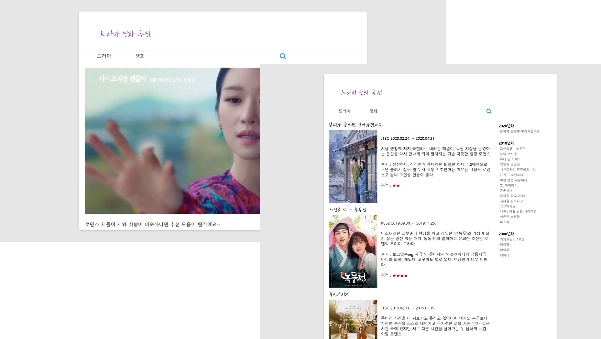
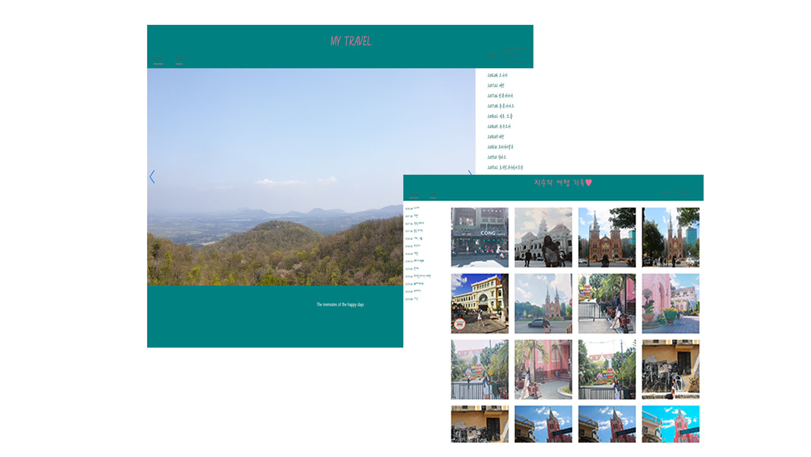
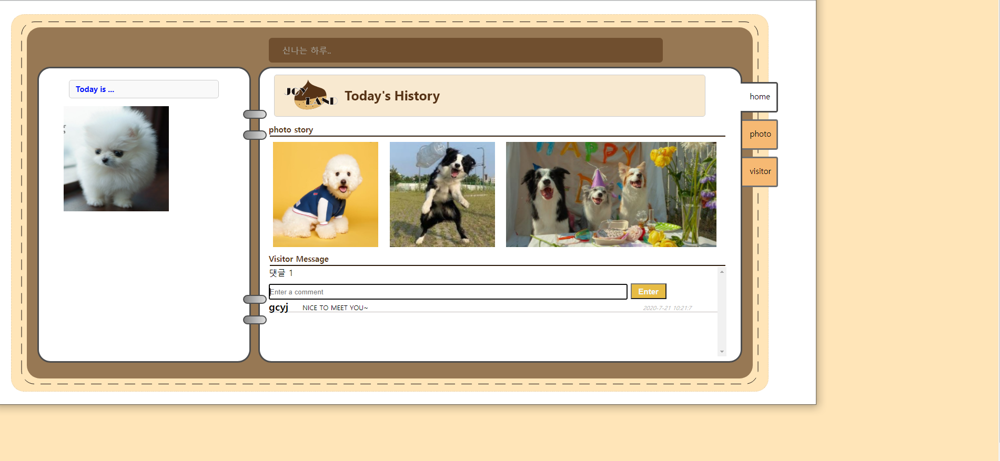
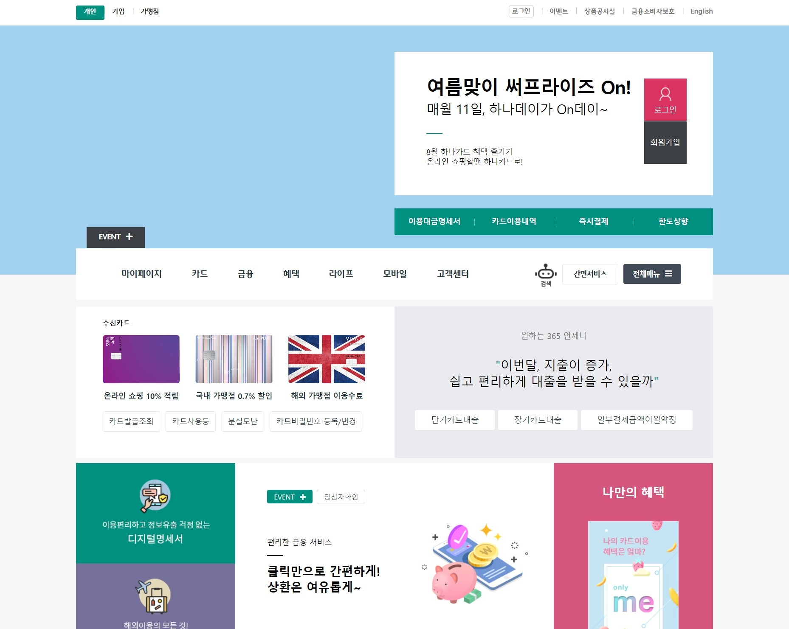
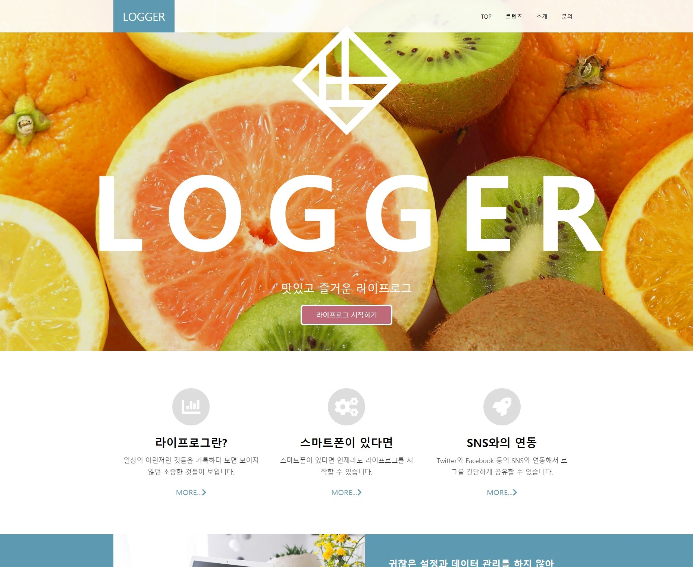

#01
GUCCI website
Main page를 기존에 있는 구찌 사이트를 카피하여 구현하는 방식으로 제작하였습니다.
java script를 사용하여 drop down menu, slider를 나타냈습니다.

#02
드라마 소개용 페이지
개인 블로그용으로 드라마 소개 페이지를 만들어보았습니다. 여러 서브페이지를 만들어 페이지 이동을 편리하게 하였고 옆의 사이드 메뉴를 이용하여 해당 위치로도 옮겨질 수 있도록 하였습니다. 또한,java script를 사용하여 drop down menu를 나타냈습니다.


#04
JOYLAND website
기존의 싸이월드를 새롭게 디자인해 제작하였습니다. javascript를 이용하여 댓글기능을 이용하였습니다.
새창열기를 누르면 조이랜드 화면이 나타납니다.


#06
LOGGER website
반응형 웹으로 가상의 웹페이지를 만들었습니다. 메인, 콘텐츠, 소개, 문의 페이지가 있으며 소개페이지에는 같은 내용이지만 다르게 표현해본 페이지가 세개 더 있습니다.
